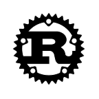
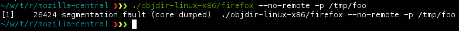
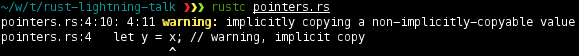
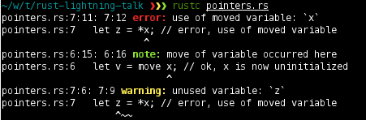

Rust, a bit of teasing
Rust, a bit of teasing

Disclaimer
- Rust is super cool, but is an ongoing effort, in beta
- The syntax changes a lot, everything breaks each release
- We are C++ devs for Gecko, not Rust hacker, not even language hackers
- But we do like where Rust is going
- This talks shares several points we liked about Rust
Rust, how?
- Version 0.4 released a week or so ago
- Created by Mozilla, but super-open
- LLVM-based
- Bootstrapped since 2011
- Borrows from C++, Erlang, OCaml, Haskell
Rust, why?
To avoid this:

- Fast (idiomatic C++ like)
- Safe (Memory safety)
- Concurrent (from the ground up, not hacked up)
- Optional runtime (GC, etc.)
- Interfaces to C (lots of libs)
- Debug / profiling using normal tools (
valgrind, gdb, etc.)
- Goal: replace C++ for Gecko (Firefox rendering engine)
What it looks like
fn main() {
for ["Alice", "Bob", "Carol"].each |name| {
let name = copy *name;
do task::spawn {
let v = rand::Rng().shuffle([1, 2, 3]);
for v.each |num| {
io::print(fmt!("%s says: '%d'\n", name, *num))
}
}
}
}
- Strong types, type inference. Default is const
- Macros, less footgun-prone than C's
- Feels functional
- Threads
What we are going to talk about
- Memory model and pointers
- The object model
- Pattern matching features
- Functional programming features
- Concurrency
- Rust vs. Go
About pointers and memory
- Three types of pointers
-
@T : Shared pointer, Task Heap (managed, cannot be sent across tasks)
-
~T : Unique pointer, Exchange Heap (can be sent across tasks, exclusive ownership)
-
&T : Borrowed Pointer
- No
null
-
move and copy keyword.
About pointer and memory: move and copy
fn main() {
let x = ~10; // unique pointer, sendable
let w = @30; // managed pointer, not sendable
let y = x; // warning, implicit copy
let u = copy x; // ok
let v = move x; // ok, x is now uninitialized
// let z = *x; // error, use of moved variable
let z = *v + *y;
}


About pointers and memory: borrowed pointers
struct point {x: float, y: float}
fn compute_distance(p1: &point, p2: &point) -> float {
let x_d = p1.x - p2.x;
let y_d = p1.y - p2.y;
float::sqrt(x_d * x_d + y_d * y_d)
}
fn main() {
let on_the_stack: point = point {x: 3.0, y: 4.0};
let on_the_heap: @point = @point {x: 3.0, y: 4.0};
compute_distance(&on_the_stack, on_the_heap);
}
- Borrowed pointers are always valid: no null-check needed.
- Very strong checks at compile time: harder to write buggy code.
Object model
trait Printable {
fn print();
}
impl int: Printable {
fn print() { io::println(fmt!("Number: %d", self)) }
}
impl &str: Printable {
fn print() { io::println(fmt!("String: %s", self)) }
}
fn main() {
let answer = 42;
let greeting : &str = "Hello, this is dog.";
answer.print();
greeting.print();
}
Pattern matching
- Rust has Erlang-like pattern matching using
match
- One of the sexiest syntax ever
- Destructuring assignment is an application of pattern matching:
let (a, b) = get_tuple_of_two_ints();
fn main() {
let a = os::args();
if a.len() != 2 {
io::println("Howdy, I need an argument.");
return;
}
// pattern matching
let number = int::from_str(a[1]);
if number.is_some() {
io::println(fmt!("%d", number.get()));
match number.get() {
0 => io::println("I got a 0."),
1 | 2 => io::println("I got 1 or 2."),
3..10 => io::println("Something from three to ten"),
_ => io::println("I got something else")
}
} else {
io::println("That was no number.");
}
}
Functionnal programming
- First class functions
- Closures, managed closure, owned closures
- The
do keyword
fn main() {
int::range(0,10, |i| {
io::println(fmt!("iteration %i", i));
true // means i want to keep iterating
});
do int::range(0,10) |i| {
io::println(fmt!("[do] iteration %i", i));
true // means I want to keep iterating
};
for int::range(0,10) |i| {
io::println(fmt!("[for] iteration %i", i));
if i > 5 { break; }
};
for [2, 4, 8, 5, 16].each |n| {
if *n % 2 != 0 {
io::println(~"found odd number!");
break;
}
}
let foo = [1, 2, 3, 4].map( |elt| { -*elt } );
}
Concurrency
The designers of Rust designed the language from the ground up to support
pervasive and safe concurrency through lightweight, memory-isolated tasks and
message passing.
- Lightweight threads, M:N model (like green threads)
- Super cheap
- Message passing using channels, without copy
- Transfer owned data using the exchange heap
- "Tasks" have failure isolation and recovery (
fail keyword, à la Erlang)
fn main() {
// Spawn 10 trivial tasks
for int::range(0, 10) |num| {
do spawn {
io::print(fmt!("I am child number %d\n", num));
}
}
// Create a vector of ports, one for each child task
let ports = do vec::from_fn(3) |i| {
let (chan, port) = stream();
do spawn { chan.send(i); }
port
};
// Wait on each port, accumulating the results
let result = ports.foldl(0, |accum, port|
*accum + port.recv());
io::println(fmt!("result %u", result));
}
Rust vs. Go
- Go is mature (Rust is in beta)
- Go is simpler
- Go relies on a GC (Rust runtime is optional)
- Go has duck typing (Rust is statically and nominally typed)
- Go offers weaker memory guarantees (no dangling pointers or buffer
overflows in Rust)
- Go is rather for highly scalable server software, not for concurrent client-side applications
Rust vs. Go
I think that Mozilla's Rust is aiming squarely at C++ developers, whereas Go
is more of a Java replacement.
I basically agree with this as a Rust developer (although I'm not sure about Go
being in Java's niche; I think of it more as in node.js's niche -- highly
scalable web apps).
-- pcwalton
https://news.ycombinator.com/item?id=4458181